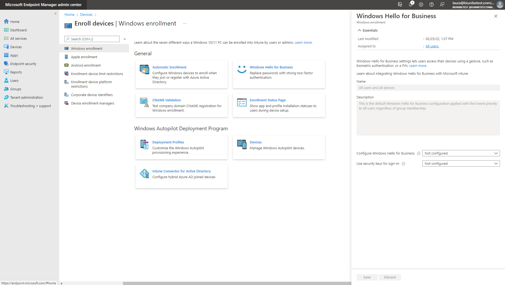

Arbeitsheft
Inhaltsverzeichnis
Intune
Configuration profiles
Alle Configurations profiles werden unter Start > Devices > Configuration profiles erstellt.
Wallpaper
Lockscreen
Start menu layout and taskbar
Add Apps
Default file associations
Toast notification
IE Mode
XML Erstellung
Konfiguration Intune
-
Zuerst muss man sich auf Azure Portal anmelden.
-
Nach der Anmeldung nach Storage Accounts suchen.
Info
Je nachdem ob man das erste Mal die Storage accounts braucht muss man zuerst das Abonnement- und die Ressourcengruppe auswählen.
-
Nun zum Starten auf + Create klicken.

-
Bei Basics alle Pflichtfelder ausfüllen.
Password policy
Um eine Password Policy zu setzten, navigiere zu Start > Devices > Compliance policies.

Nun Create Policy anwählen.

Info
Nun kann man damit beginnen die Password Policy zu erstellen, die kann man wie ich sie gemacht habe befolgen oder auch einige Dinge abändern.
Konfigurationsschritte


- L
- V
- I
- I
- P
- Ae
PIN Deaktivierung
Nach diesem kurzen Schritt wird das "Windows Hello for Business" deaktiviert. Somit auch die Eingabe vom PIN, welche ich deaktivieren wollte.
Arbeitsschritte
-
Zuerst muss man vom Home aus zu Devices > Windows > Windows enrollment navigieren.

-
Unter Windows enrollment kann man nun Windows Hello for Business anklicken.

-
Auf dem neu erschienen Feld, muss man unter Configure Windows Hello for Business Disabled angeben.

-
Nun Save anwählen.

-
Nach der Speicherung wurde der PIN schon deaktiviert.

Gerät bei Autopilot hinzufügen
Bevor man in Intune das Gerät importieren kann. Muss ein Script auf dem jeweiligen Gerät ausgeführt werden.
Auf dem Gerät
-
Wie auf THE LAZY ADMINISTRATOR das Script herunterladen und am besten auf einem USB-Stick speichern, für weiteren gebrauch.
-
Nach dem Download fehlte bei mir noch ein CMD feil welches ich kopiert habe.
-
Nun kann das Get-WindowsAutoPilotInfo.ps1 ausgeführt werden. Als Admin ausführen!
-
Nun sollte eine compHas.csv erstanden sein, welche man für den Intune schritt braucht.

In Intune
-
Zuerst muss man vom Home aus zu Devices > Windows > Windows enrollment > Devices navigieren.

-
Auf der Windows Autopilot devices Seite Import anwählen.
-
Hier nun die erstellte compHash.csv angeben.


-
Nach einigen Minuten sollte das Gerät neu auf der Liste erscheinen.

Autopilot Script Anpassung
Damit das Gerät welches mit Autopilot aufgesetzt wird, auch den Group Tag erhält und Online die neuste Windows Version herunterlädt. Muss man nur drei kleine Änderungen am Script vornehmen, welches im KW7 Wochenbericht erstellt habe.
Arbeitsschritte
-
Zum Starten Windows PowerShell ISE öffnen.
-
Nun die Script Datei auf dem USB-Stick öffnen.
Von der Startseite aus zu Datei > Öffnen... navigieren. Oder mit dem shortcut Strg + O.
Jetzt zur ps1. Datei navigieren und diese öffnen.
-
Nun die drei Änderungen vornehmen.
Da ich möchte, dass jedes Gerät den Group Tag Client automatisch zugeordnet kriegt. Gebe ich dies unter $GroupTag an. Auf dem Bild wäre dies in der Zeile 117 zusehen.
Jetzt noch $Online auf $true stellen. Auf dem Bild wäre dies in der Zeile 123 zusehen.
Assign habe ich zusätzlich auch noch auf $true gestellt. Auf dem Bild wäre dies in der Zeile 129 zusehen.
Softwarepaketierung
KFM
Multiboot-USB-Stick mit YUMI erstellen
Mit dieser Anleitung kann man einen Multiboot-USB-Stick erstellen. Ich habe dafür YUMI („Your Universal Multiboot Installer“) verwendet und ein Windows 10, Windows 11 und Knoppix 9.1 gewählt.
YUMI Download
-
Auf der Pendrivelinux.com findet man die drei YUMI Varianten, die man downloaden kann. Ich habe YUMI exFAT verwendet. Der direkte link für YUMI exFAT.
-
Zum Downloaden, beim YUMI exFAT (BIOS and UEFI USB Boot) abschnitt bis nach unten scrollen und auf den Download Button klicken. Nach dem Download YUMI mit einem doppelklick starten.
Multiboot-USB-Stick erste schritte
-
Nach dem Starten von YUMI muss man zuerst die Bedingungen mit «I Agree» bestätigen.
-
Nun unter Step 1: ... der gewünschte USB-Stick anwählen.
-
Jetzt bei Step 2: ... die Liste öffnen, in dem man ins leere Feld klickt und danach das passende zu Ihrem iso wählen. (Da ich ein Windows 11 iso auf dem Stick haben wollte, habe ich in der Liste Windows Installer iso ausgewählt)
-
Nun da der Explorer erschienen ist kann man zum iso File navigieren und dies anwählen. Wen man das richtige iso hat, Öffnen anwählen.
-
Jetzt kann man auf Create klicken.
Der Kopierprozess dauert ca. 2 Minuten.
Nachdem es fertig geladen hat, kann man auch Next > klicken.
Nun wird man danach gefragt, ob man ein weiteres iso auf den Stick laden möchte. Da auf einen Multiboot-USB-Stick mehrere gehören, habe ich ja angewählt.
Weitere Images
Nach dem man Ja angewählt hat, erscheint das gleiche Feld wie zuvor. Jetzt kann man die gleichen Schritte wie zuvor durchspielen, bis man alle Images hat, die man möchte.
Beispiel Knoppix:
Bei Knoppix habe ich das gleiche wie bei Windows gemacht, nur dass ich bei Step 2: ... Ubuntu ausgewählt habe.
Hinweise
- Sollte man zweimal das gleiche iso anwählen, wird man darauf aufmerksam gemacht.
- Bei mehreren ISOs erscheint ein Step 4:... welcher optional ist.
- Bei wieder Verwendung von YUMI kann man unter Reinstall or Update? nachschauen welche die aktuellste Version ist und welche Version auf dem Gerät installiert ist.
Warning
Bei Hinzufügung von einem ISO auf einem USB-Stick kein Reinstall durchführen, sonst werden alle schon vorhandenen ISO's gelöscht.
Probleme beim Booten
Möchte man von einem USB-Stick aus booten, bekommt aber die Meldung "" kann man wie folgt vorgehen.
Firmware Update bei hp Drucker
-
Drucker suchen
Unter Print Management nach dem Drucker suchen und Doppel klick auf den Druckernamen.
-
Produktname suchen
Unter General wurde der Produktname bei dem Kommentar hinterlegt.
-
Nach Software und Treiber von Produkt suchen
Auf der hp Seite den Produktnamen angeben. Wie auf dem Bild zu sehen reicht der markierter teil. hp Link
-
Nach Firmware suchen
Auf der neu erschienenen Seite nach Firmware suchen. Es kann kein oder mehrere Updates vorhanden sein. Bei einem passenden update auf Herunterladen klicken.
-
exe Datei starten
Nach einigen Sekunden muss man unten Run anwählen.
-
Drucker suche
Bei diesem Schritt des Prozesses sucht es nach Druckern, die zu dem heruntergeladenen Update passt.
-
Drucker Auswahl
Da auf meiner Drucker liste, mehrere Drucker wahren, die dem gleichen Model entsprachen, bekam ich eine grössere Auswahl als nur der von mir gesuchte Drucker.
-
Password Eingabe
Nach dem Anwählen von dem Drucker, bei dem ich das Update machen möchte, muss ich noch ein Password eingeben.
-
Update starten
Nun kann man unten Update anwählen. Nach der Installierung kann man alle Fenster schliessen.
Windows 10 mit dem Boot Camp-Assistenten auf einem Mac installieren
Voraussetzungen für die Installation von Windows 10 auf einem Mac
- MacBook von 2015 oder neuer
- MacBook Air von 2012 oder neuer
- MacBook Pro von 2012 oder neuer
-
Mac mini von 2012 oder neuer
-
iMac von 2012 oder neuer1
- iMac Pro (alle Modelle)
- Mac Pro von 2013 oder neuer
Warning
Mindestens 64 GB freien Speicherplatz auf dem Startvolume des Mac.
-
Einstellung für "Sicheres Starten" prüfen
Vor der Installation von Windows sollte man die Einstellung auf "Volle Sicherheit" stellen. Nach der Installation von Windows kann man mit jeder Einstellung für "Sicheres Starten" von Windows aus starten.Link zur Anleitung um sicheres Starten überprüfen.
-
Mit dem Boot Camp-Assistenten eine Windows-Partition erstellen
Vom Finder aus zu Programme > Dienstprogramme > Boot Camp-Assistent navigieren. Dort den Boot Camp-Assistent starten.
- Wenn der Boot Camp-Assistent dazu auffordert, die Größe der Windows-Partition festzulegen, muss man die oben genante mind. grösse berücksichtigen.
Warning
Die Partitionsgrösse kann später nicht mehr geändert werden.
-
Windows-Partition (BOOTCAMP) formatieren
Nach der Ausführung des Boot Camp-Assistenten wird der Mac neu gestartet und kehrt zum Installationsprogramm zurück. Wenn man nach dem Installationsprogramm gefragt wird, wo Windows installiert werden soll, muss man die BOOTCAMP-Partition an wählen, und dan auf "Formatieren" klicken.
Info
In den meisten Fällen wird die richtige BOOTCAMP-Partition vom Installationsprogramm automatisch ausgewählt und formatiert.
-
Windows installieren
Nun am besten alle externen Geräte, die während der Installation nicht benötigt werden trennen. Dann auf "Weiter" klicken. Folgend den Anweisungen auf dem Bildschirm folgen, um Windows zu installieren.
-
Boot Camp-Installationsprogramm unter Windows verwenden
Nach Abschluss der Windows-Installation wird der Mac unter Windows gestartet und das Fenster "Willkommen beim Boot Camp-Installationsprogramm" geöffnet. Nach dem beflogen der Anweisungen auf dem Bildschirm, werden die Boot Camp- und Windows-Support-Software (Treiber)installiert. Sobald dies fertig ist, wird man dazu aufgefordert, den Computer neu zu starten.
Wechsel zwischen Mac und Windows
Um zwischen den beiden zu wechseln, muss man bei einem Neustart, die Wahltaste (oder die Alt-Taste) ⌥ während des Startvorgangs gedrückt halten. Link zur kurz Anleitung von Apple.